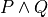

16. Proofs¶
KS: Edit this intro.
Finally, logic consequence. A set of logical propositions, premises, is said to entail another, a conclusion, if in every interpretation where all of the premises are true the conclusion is also true. See the file, consequence.dfy, for a consequence checker that works by exhaustive checking of all interpretations. <More to come>.
KS: Transition here from sematic to syntactic entailment.
Note to self: The next few chapters separate complexities on the way to full first-order logic. The first, addressed here, is the shift from a semantic to a syntactic approach to judging truth. Derivation vs. Evaluation.
We will use the reasoning principles just validated semantically to formulate analogous syntactic rules: i.e., natural deduction. These rules provide a needed alternative to truth tables for ascertaining truth in propositional logic. Truth tables grow too large too fast.
The next two chapters introduce, respectively, predicate logic without quantifiers but including interpretations over arbitrary sets; and then the introduction of quantifiers. [FIX BELOW: UNDER CONSTRUCTION.]
One way to define a set of inference rules that define ways that one can transform one set of expressions (premises) into another (a conclusion) in such a manner that whenver all the premises are true, the conclusion will be, too.
Why would anyone care about rules for transforming expressions in abstract languages? Well, it turns out that syntactic reasoning is pretty useful. The idea is that we represent a real-world phenomenon symbolically, in such a language, so the abstract sentence means something in the real world.
Now comes the key idea: if we imbue mathematical expressions with real-world meanings and then transform these expression in accordance with valid rules for acceptable transformations of such expressions, then the resulting expressions will also be meaningful.
A logic, then, is basically a formal language, one that defines a set of well formed expressions, and that provides a set of inference rules for taking a set of expressions as premises and deriving another one as a consequence. Mathematical logic allows us to replace human mental reasoning with the mechanical transformation of symbolic expressions.
16.1. Unscalability of Semantic Entailment¶
At this point, we’ve proposed and validated (using truth tables) a set of fundamental inference rules. Unfortunately, using truth tables doesn’t scale well. We thus play an important game, now, where we simply accept the inference rules as valid transformation between sets of premises and conclusions. We view the Ps, Qs, Rs in the rules we validated as “standing for” arbitrary propositions, and we now apply these rules without having to go back and validate the results “semantically” (using truth tables). We thus transition from what we call “semantic entailment” to “syntactic entailment,” which finally moves us into the realm of logic and proof.
We now also shift tools, from Dafny, which allows us to write logic, but which largely hides the proofs and their construction, to Lean, which is what we call a proof assistant. Many propositions are too difficult for tools such as Dafny to prove automatically. If we still want the assurances of correctness (of software or even just in pure mathematics) provided by a strongly typed checker, then we have to use a tool in which we manipulate both propositions and proofs explicitly. We are now there.
The purpose of this initial unit is to give you an introduction to the fundamental concepts of propositions and proofs, using a proof tool as an aid to learning: here the Lean Prover.
A key point in this chapter is that different forms of propositions have different forms of proofs, and require you to use different proof “strategies” to construct such proofs. These ideas are fundmental to discrete mathematics whether or not you are using a proof tool. Benefits of using a tool like Lean include nearly absolute assurance that you haven’t made a mistake by accepting a proof that isn’t really valid.
16.2. Natural Deduction¶
Natural deduction, which is the proof system that we’re using here, is a set of functions (inference rules) for taking apart (elimination) and putting together (introduction) proofs of propositions to produce proofs of other propositions.
This natural deduction proof systems was invented long before autoamted tools, and is one of the fundamental systems for precise logical reasoning. The Lean Prover and similar “proof assistants” automate natural deduction proof development, and and use strong, static type checking to make sure that you can never produce an incorrect proof: because you’re never allowed to pass arguments of the wrong types to the inference rules.
Take-away: You’re learning the natural deduction style of producing proofs of mathematical conjectures; but unlike the students doing this with paper and pencil and no tool to help, you have the benefit of automation and a highly trustworthy correctness checker.
The cost is that now you can’t be sloppy. Inded, you have to be very precise about every step. Experienced mathematicians like to skip many steps in writing proofs, when they (think they) know that the details will all work out. The upside is that it’s easier to write proofs. The downside is that errors can easily go undetected. Many errors in proofs of important theorems have only been found years after the proofs were reviewed by mathematicians and accepted as true in the community. When lives depend on the correctness of proofs, it can be worth the trouble to make sure they’re right. -/
16.3. Forms of Propositions; Forms of Proofs¶
With this background in hand, we can now use what we’ve learned to start to investigate the world of mathematical logic and proof at a high level of sophistication and automation!
In particular, we now start to explore different forms of propositions and corresponding proof strategies. The first unit in the remainder of this introduction focuses on propositions that assert that two terms are equal. The strategy we see used here is “proof by simplification and by the reflexive property of equality”.
16.4. Introduction and Elimination Rules¶
16.5. True Introduction¶
Recall from our introduction to inference rules in propositional logic that the proposition, pTrue, is true without any preconditions. We wrote the rule like this: ([],pTrue), and we called it “true intro”. We proved the rule semantically valid, so we can write [] |= pTrue. That is, from an empty context (no previous assumptions) we can conclude that pTrue is true.
In lean, “true” is the true proposition. You can check that “true” is a proposition using #check.
#check true
Note: the proposition, true, is different than the Boolean value, true. The Boolean value, true, written “tt” in Lean, is one of the two values of the bool datatype. It is not a proposition. Chek it out.
#check tt
In Lean and similar proof assistants, propositions, such as true in Lean, can be defined inductively. The keyword for an inductive datatype in Dafny is just “datatype”. Recall the definition of our syntax for propositional logic, for example. The values of a type are defined by a list of contructors.
As proofs are values of types, we can define propositions as types and proofs of such propositions as values produced by constructors. The simplest example is the proposition, true, in Lean. It’s defined in Lean’s core library like so:
inductive true : Prop
| intro : true
This says that true is of type Prop, i.e., is a proposition, and it has just one value, proof, namely “intro”. The constructor says, “intro” is of type (i.e., is a proof of) true. The intro constructor takes no arguments and so is always available as a proof of true. We thus have our true introduction: just use the constructor. Here we should how to assert that the proposition “true” is true (there’s a proof for it) by giving the one and only proof, namely “intro”. To refer to a constructor of a type, use the type name dot constructor name.
theorem proofOfTrue: true := true.intro
True introduction isn’t a very useful rule of natural deduction, as it doesn’t allow you to conclude anything new. It’s not used much in real-world proofs, but it’s good to know about.
16.5.1. The proposition, false¶
In Lean, false is also a proposition. By contrast, the Boolean false value in Lean is written as ff.
#check false -- proposition (Prop)
#check ff -- Boolean value (bool)
false is meant to be and is a proposition that is never true, i.e., for which there is no proof. As a type, it has no values. It is said to be an “uninhabited” type.
The false proposition/type is defined inductively as having type, Prop, and as having exactly no constructors! It’s a proposition but there is no way to contruct a proof. Here’s the definition of false from the Lean core libraries:
inductive false : Prop
That’s it, there are no constructors.
There is no false introduction rule. There is no way to introduce a proof of false because there is no proof of false. We’ll discuss false elimination later. -/
16.5.2. Proofs Involving Conjunctions¶
We now explore the use of the and introduction and elimination inference rules, whether doing paper-and-pencil mathematics or when using an automated proof assistant such as Lean. This section also serves as an introduction to the idea that you use different proof techniques to prove different kinds of propositions: e.g., conjunctions, implications, disjuctions, etc.
16.5.2.1. And Introduction¶
Whether in pencil-and-paper mathematics or when using a proof assistant such as Lean, to prove a conjunction, , you have to produce a proof of P and a proof of Q. You then use the “and introduction” inference rule to conclude that is true, where the proof is really just the ordered pair of the proofs of the individual conjuncts, P and Q, respectively.
What we’re going to see as we move forward on the topics of proofs is that of different forms of propositions require different kinds of proof techniques, or “proof strategies.”” Learning to recognize what kind of proposition you’re looking at, and then to pick the right proof strategy, is critical. When the goal is to prove a conjunction, P ∧ Q, the strategy is to prove each individually then combine the proofs using the and introduction rule to reach the goal.
Remember the and introduction rule from our work on propositional logic. We wrote it like this [P, Q] ⊢ P ∧ Q. Now that we’ve equated “being true” with “having a proof” we can write it with some more details, like this: [pfP: P, pfQ: Q] ⊢ (pfP, pfQ): P ∧ Q.
In other words, if I have a proof, pfP, of P (i.e., a value, pfP, type, P!), and a proof, pfQ, of Q, then I can build a proof of P ∧ Q, in the form of the ordered pair (pfQ, pfQ).
The and introduction rule can be understood as a function that takes two proof values, of types P and Q, respectively, and returns a new proof value, of type P ∧ Q in the form of an ordered pair of the “smaller” proofs.
Whether using a proof assistant or just doing paper and pencil math, the strategy for proving a conjunction of propositions is to split the conjunction into its two component propositions, obtain proofs of them individually, and then combine/take the two proofs as a proof of the overall conjunction. The benefit of using a proof assistant is that aspects are automated, and you’re not allowed to make mistakes. -/
So that we can play around with this idea, given that we already have a proof of 0=0 (zeqz), we now contruct a proof of 1=1 so that we have two propositions and proofs to play with.
#check zeqz
theorem oeqo : 1 = 1 := rfl
To start, let’s prove 0=0 ∧ 1=1. We already have a proof of 0=0, namely zeqz. And we already have a proof of 1=1, namely oeqo. So we should be able to produce a proof of 0=0 ∧ 1=1 by using the “and introduction” inference rule. Remember that it says that if a proposition, P, is true (and now by that we mean that we have a proof of it), and if Q is true, then we can deduce (construct a proof!) that P ∧ Q is true. Here’s how you do that in Lean. (Note: we get the logical and symbol, ∧, by typing “and”, i.e., backslash-and, followed by a space.)
theorem t2: 0=0 ∧ 1=1 := -- proposition
and.intro zeqz oeqo -- build proof
#check t2
NOTE!!! Whereas we typically define functions to take a single tuples of argument values, and thus write the arguments to functions as tuples (in parenthesis), e.g., inc(0), here we write arguments to proof constructors (inference rules) without parenthesis and without commas between values. So here for example, and below, we write “and.intro zeqz oeqo” rather than and.intro(zeqz, oeqo). Be careful when you get to the exercises to remember this point.
16.5.2.2. And Elimination¶
And introduction creates a proof of a conjunction from proofs of its parts (its “conjuncts”). Such a proof is a pair the elements of which are the two “smaller” proofs. Given such a proof/pair, the and elimination rules return one of the other the component proofs. For example, from a proof of P ∧ Q, and.elim_left will return the contained proof of P, and the and.elim_right rule returns the proof of Q.
theorem e1: 0=0 := and.elim_left t2
This says that a value, e1, of type 0=0, i.e., a proof of 0=0, can be obtained by applying and.elim_left to t2, which is a proof of 0=0 ∧ 1=1. The and elimination rules are just “project operators” (getter functions) on pairs of proofs.
16.5.3. Implications¶
Next we turn to proofs of propositions in the form of implications, such as P → Q. Up until now, we’ve read this implication as a proposition that claims that “if P is true then Q must be true.”
But now we’ve understood “truth” to mean that there is a proof. So we would view the proposition, P → Q, to be true if there’s a proof of P → Q. And we have also seen that we can view propositions as types, and proofs as values. So what we need to conclude that P → Q is true is a proof, i.e., a value of type P → Q.
What does such a value look like? Well, what does the type P → Q look like? We have seen such types before. It looks like a function type: for a function that when given any value of type, P, returns a value of type, Q. And indeed, that’s just what we want. We will view P → Q, the proposition, to be true, if and only if we can produce a function that, when given any proof of P, gives us back a proof of Q. If there is such a function, it means that if P is true (if you can produce a proof value for P) then Q is true (you can obtain a proof for Q) just by calling the given function. Note, proving P → Q doesn’t tell you anything about whether P is true, but only that if you can give a proof of P, then you can construct a proof of Q: if you “assume” that P is true, then you can deduce that Q is too.
To make this idea clear, it will help to spend a little more time talking about functions and function types. In particular, we’ll introduce here a new notation for saying something that you already know how to say well: a way to represent function bodies without having to give them names. These are given the somewhat arcane name, lambda expressions, also written as λ expressions. So let’s get started.
16.5.4. Interlude: Function Values¶
We can define functions in Lean almost as in Dafny. Here are two functions to play with: increment and square. Go back and look at the function.dfy file to see just how similar the syntax is.
def inc(n: nat): nat := n + 1
def sqr(n: nat): nat := n * n
def comp(n: nat): nat := sqr (inc n)
16.5.4.1. Functions are Values, Too: Lambda Expressions¶
Now’s a good time to make a point that should make sense: functions are values of function types. Our familiar notation doesn’t make function types explicit, but it shouldn’t be a stretch for you to accept that the type of inc is nat → nat. Lean provides nice mathematical notation so if you type “nat” you’ll get ℕ. So, that type of inc is best written, ℕ → ℕ.
We could thus have declared inc to be a value of type ℕ → ℕ, to which we would then assign a function value. That is a new concept: we need to write formally what we’d say informally as “the function that takes a nat, n, as an argument and that returns the nat, n + 1 as a result.”
The way we write that in Lean (and in what we call the lambda calculus more generally) is “λ n, n + 1”. The greek letter, lambda (λ), says “the following variable is an argument to a function”. Then comes a comma followed by the body of the function, usually using the name of the argument. Here then is the way we’d rewrite inc using this new notation.
def inc’: ℕ → ℕ := λ n: nat, n + 1 def inc’’ := λ n: nat, n + 1
#check inc’ 1 #eval inc’ 1
As you might suspect, from the function value, Lean can infer its type, so you don’t have to write it explicitly. But you do have to write the type of n here, as Lean can’t figure out if you mean nat or int or some other type that supports a * operator.
def sqr’ := λ n: nat, n * n
Given a function defined in this way, you can apply it just as you would apply any other function.
def sq3 := sqr’ 3
Don’t believe that sq3 is therefore of type nat? You can check the type of any term in Lean using its #check command. Just hover your mouse over the #check.
#check sq3
Do you want to evaluate the expression (aka, term) sq3 to see that it evaluates to 9? Hover your mouse over the #eval.
#eval sq3
To give a proof (value) for a proposition in the form of an implication, we’ll need to provide a function value, as discussed. While we could write a named function using def and then give that name as a proof, it is often easier to give a lambda expression directly, as we’ll see shortly.
16.5.4.2. Recursive Function Definitions¶
We can also define recursive functions, such as factorial and fibonacci using Lean’s version of Dafny’s “match/case” construct (aka, “pattern matching”).
Here’s how you write it. The first line declares the function name and type. The following lines, each starting with a bar character, define the cases. The first rule matches the case where the argument to fac is 0, and in that case the result is 1. The second case, which is written here a little differently than before, matches any value that is one more than some smaller argument, n, and returns that “one more than n” times the factorial of the samller number, n. Writing it this way allows Lean to prove to itself that the recursion terminates.
def fac: ℕ → ℕ
| 0 := 1
| (n + 1) := (n + 1) * fac n
We can now write some test cases for our function … as little theorems! And we can check that they work by … proving them! Here once again our proof is by the reflexive property of equality, and lean is automatically reducing (simplifying) the terms (fac 5) and 120 before checking that the results are the same. fac 5 does in fact reduce to 120, so the terms, fac 5, and 120, are definitionally equal, and in this case, rfl constructs a proof of the equality.
theorem fac5is120 : fac 5 = 120 := rfl
16.5.5. Rules for Implication¶
So far we’ve see how to build proofs of equality propositions (using simplification and reflexivity, i.e., rfl), of conjunctions (using and.intro), and of disjuctions (using one of the or introduction rules). What about implications?
16.5.5.1. Arrow Introduction¶
Suppose we wanted to show, for example, that (1=1 ∧ 0=0() → (0=0 ∧ 1=1). Here the order of the conjuncts is reversed.
How to think about this? First, remember that an implication, such as P → Q, doesn’t claim that the premise, P, is necessarily true, or that Q is. Rather, it only claims that *if the premise, P, is true, then the conclusion, Q, must be as well.
Again, by “true”, we now mean that we have or can construct a proof. An implication is thus read as saying if you assume that the premise, P, is true, in other words if you assume that you are given a proof of P, then you can then derive (construct) a proof of Q.
But proofs are just values, so a proposition in the form of an implication, P → Q is true when we have a way to convert any value (proof) of type P into a value (proof) of type Q. We call such a value converter a function!
Think about this: the implication, P → Q is true if we can define a function (body) of type, P → Q.
So now, think about how to write a function that takes an argument of type 1=1 ∧ 0=0 and that returns a result of type 0=0 ∧ 1=1 (the conjuncts are biw in the reverse order).
Start by recalling that a proof of a conjunction, such as 0=0 ∧ 1=1, is a pair of proofs; the and elimination rules you a way to get at the individual values/proofs in such pairs; and the and introduction rule creates such a pair given arguments of the right types. The strategy for writing the function we need is thus: start with a proof of 1=1 ∧ 0=0, which is a pair, (proof of 1=1, proof of 0=0); then extract the component proofs, then build and return a pair constituting a proof of the conjunction with the component proofs in the opposite order.
Here’s an ordinary function that does the trick. From an assumption that 1=1 ∧ 0=0 it constructs and returns a proof of 0=0 ∧ 1=1. It does it just as we said: extract the component proofs then put them back together in the reverse order. Voila!
def and_swap(assumption: 1=1 ∧ 0=0): 0=0 ∧ 1=1 :=
and.intro
(and.elim_right assumption)
(and.elim_left assumption)
A paper and pencil proof could be written like this. “Assume 0=0 ∧ 1=1. From this premise (using the and elimination rule of natural deduction), we can deduce immediately that both 0=0 and 1=1. Having shown that these propositions are true, we can immediately (using the and introduction rule of natural deduction) deduce that 0=0 ∧ 1=1. QED.”
The QED stands for the Latin, quod es demontratum, so it is shown. It’s used to signal that the goal to be proved has been proved.
Here’s the same proof using a lambda. You can see here how lambda expressions (also know as anonymous functions) can make for cleaner code. They’re also essential when you want to return a function.
theorem and_commutes: 1=1 ∧ 0=0 → 0=0 ∧ 1=1 :=
λ pf: 1=1 ∧ 0=0, -- given/assuming pf
and.intro -- build desired proof
(and.elim_right pf)
(and.elim_left pf)
The bottom line here is that we introduce, which is to say that we prove a proposition that has, an “arrow,” by defining a function.
Whereas the proof of a conjunction is pair of smaller proofs, the proof of an implication is a function from one type of proof to another.
Whether using a proof assistant or writing paper and pencil proofs, they key to proving an implication is to show that if you assume you are given a proof of the premise, you can turn that into a proof of the conclusion. We thus have a second fundamental proof strategy. -/
16.5.5.2. Arrow Elimination¶
The arrow elimination inference rule looks like this: [P -> Q, P] ⊢ Q. It starts with both an implication (aka, function), in the context, along with a proof of its premise, and derives the conclusion of the implication. This is just modus ponens, and the way you get from the premises to the conclusion is by applying the implication (it’s a function) to the assumed proof of P, yielding a proof of Q! Modus ponens is function application!
theorem modus_ponens'
(hImp: 1=1 ∧ 0=0 → 0=0 ∧ 1=1) (hc: 1=1 ∧ 0=0): 0=0 ∧ 1=1
:= hImp hc -- apply function hImp to argument hc
theorem modus_ponens'':
(1=1 ∧ 0=0 → 0=0 ∧ 1=1) →
1=1 ∧ 0=0 →
0=0 ∧ 1=1 :=
λ hImp hc, (hImp hc)
Arrow elimination is modus ponens is function application to an argument. Here’s the general statement of modus ponens as a function that is polymorphic in the types/propositions, P and Q. You can see that the propositions are arguments to the function, along with a P → Q function and a (value) proof of (type) P, finally producing a (value) proof of (type) Q.
theorem modus_ponens: ∀ P Q: Prop, (P → Q) → P → Q :=
λ (P Q: Prop) (funP2Q: P → Q) (pfP: P), funP2Q pfP
We could of course have written that using ordinary function notation.
theorem modus_ponens2
(P Q: Prop) (pfImp: (P → Q)) (pfP: P): Q :=
(pfImp pfP)
16.5.5.3. Optional material on using type inference¶
As an advanced concept, putting arguments in curly braces tells Lean to use type inference `to infer their values.
theorem modus_ponens3
{P Q: Prop} (pfImp: (P → Q)) (pfP: P): Q :=
(pfImp pfP)
Type inference can also be specified for lambdas by enclosing parameters to be inferred in braces.
theorem modus_ponens4: ∀ P Q: Prop, (P → Q) → P → Q :=
λ P Q: Prop, λ pfImp: P → Q, λ pfP: P, (pfImp pfP)
Compare the use of our modus_ponens function with modus_ponens3. In the latter case, Lean infers that the propositions (values of the first two parameters) are P and Q, Such uses of type inference improve code readaibility.
16.6. Proofs Involving Disjunctions¶
16.6.1. Or Introduction¶
To prove a conjunction, we saw that we need to construct a pair of proofs, one for each conject. To prove a disjunction, P ∨ Q, we just need a proof of P or a proof of Q. We thus have two inference rules to prove P ∨ Q, one takeing a proof of P and returning a proof of P ∨ Q, and one taking a proof of Q and returning a proof of P ∨ Q. We thus have two or introduction rules in the natural deduction proof system, one taking a proof of the left disjunct (P), and one taking a proof of the right (Q).
For example, we can prove the proposition, 0=0 ∨ 1=0 using an “or introduction” rule. In general, you have to decide which rule will work. In this case, we won’t be able to build a proof of 1=0 (it’s not true!), but we can build a proof of 0=0, so we’ll do that and then use the left introduction rule to generate a proof of the overall proposition.
The or introduction rules in Lean are called or.inl (left) and or.inr (right). Here then we construct a proof just as described above, but now checked by the tool.
theorem t3: 0=0 ∨ 1=0 :=
or.inl zeqz
#check zeqz
#eval zeqz
theorem t4: 1=0 ∨ 1=1 :=
or.inr oeqo
Once again, we emphasize that whether or not you’re using Lean or any other tool or no tool at all, the strategy for proving a disjunction is to prove at least one of its disjucts, and then to take that as enough to prove the overall disjunction. You see that each form of proposition has its own corresponding proof strategy (or at least one; there might be several that work). In the cases we’ve seen so far, you look at the constructor that was used to build the proposition and from that you select the appropriate inference rule / strategy to use to build the final proof. You then either have, or construct, the proofs that you need to apply that rule to construct the required proof.
As a computational object, a proof of a disjunction is like a discriminated union in C or C++: an object containing one of two values along with a label that tells you what kind of value it contains. In this case, the label is given by the introduction rule used to construct the proof object: either or.inl or or.inr.
16.6.2. Or Elimination¶
[Kevin: Consider section on partial evaluation. Students need it at this point to understand the different ways to parse statements and proofs of chained implications: currying and uncurrying.
The or elimination inference rule, which we first saw and validated, in the unit on propositional logic, is used to prove propositions of the form: P ∨ Q → R.
What’s needed to construct this proof are proofs of (1) if P is true then so is R (i.e., P → R), and (2) if Q is true, then so is R (i.e., Q → R.)
Now if you assume or know that at least one of P or Q is true then you can show R by case analysis. Here’s the reasoning. One or both of P or Q is true. Also, if P is true, so is R; and if Q is true, so is R. So, R must be true.
Here is an example of the use of Lean’s rule for or elimination. It is really just a statement and proof of the elimination rule for or.
-- shorthand, without all the explicit lambdas
theorem or_elim:
forall P Q R: Prop, (P ∨ Q) → (P → R) → (Q → R) → R :=
λ P Q R pq pr qr,
or.elim pq pr qr
Version with all the lambdas explicit, and parentheses to make the
associativity in the propositon (and in the corresponding function
definition) clear.
theorem or_elim':
forall P Q R: Prop, (P ∨ Q) → ((P → R) → ((Q → R) → R)) :=
λ (P Q R: Prop), (λ pfPorQ, (λ pfPimpR, (λ pfQimpR,
or.elim pfPorQ pfPimpR pfQimpR)))
#check or_elim
If you prefer an ordinary function, here it is again.
def or_elim'' (P Q R: Prop) (pq: P ∨ Q) (pr: P → R) (qr: Q → R): R :=
or.elim pq pr qr
In informal mathematical writing, you would write something like this.
“We aim to prove if either P ∨ Q is true then R follows. We do this by case analysis. First we consider when P is true. For this case, we show that P implies R. Second we consider the case were Q is true. For this case, we show if Q is true then R follows. So in either case, R follows. In a context in which you have proofs of P ∨ Q, P → R, and Q → R, you can thus apply or elimination to introduce a proof of R into the context.
16.7. Falsity and Negation¶
16.7.1. ¬P¶
The proposition, ¬P, is read “not P.” It’s an assertion that P is false. One proves a proposition, ¬P, by showing that that an assumption that P is true leads to a contraction.
We highlight an important point here. This section is about proving ¬P by showing that if you assume there is a proof of P then you can prove “false”, which is absurd. In classical logic, you can prove P by showing a proof of ¬P leads to a contradiction. This is the method of “proof by contradiction.” It relies on the fact that ¬¬P → P, i.e., on double-negative elimination. In both propositional logic and in classical predicate logic, this is a valid inference rule. It’s not valid in the logic of lean unless one adds an axiom allowing it. You should be
familiar with (1) the concept of double negative elimination, (2) the idea that it can be used to prove a proposition, P, in classical logic by showing that the assumption of ¬P leads to a contradiction, therefore one can conclude ¬¬P, and then by double negative elimination, P. And you should be familiar with the fact that this form of reasoning is not valid in a constructive logic, such as that of Lean, without the addition of an extra “axiom” allowing it.
So let’s get back to the point at hand: ¬P means P → false. You prove ¬P by showing that assuming that there is a proof of P enables you to build a proof of false. That is, you show ¬P by showing that there is a function that, given a proof of P, constructs and returns a proof of false.
In a paper and pencil proof, one would write, “We prove ¬P by showing that an assumption that P is true leads to a contradiction (a proof of false). There can be no such thing, so the assumption must have been wrong, and ¬P must be true. QED.” Then you present details proving the implication. That in turn is done by defining a function that, if it were ever given a proof of P, would in turn construct and return a proof of false.
The key thing to remember is that the proposition (type) ¬P is defined to be exactly the proposition (function type) P → false. To prove ¬P you have to prove P → false, and this is done, as for any proof of an implication, by defining a function that converts an assumed proof of P into a proof of false.
It’s not that you’d ever be able to call such a function: because if ¬P really is true, you’ll never be able to give a proof of P as an argument. Rather, the function serves to show that if you could be given a proof of P then you’d be able to return a proof of false, and because that’s not possible (as there are no proofs of false), there must be no proof of P.
Here’s a very simple example. We can prove the proposition ¬ false by giving a function that if given a proof of false, returns a proof of false. That’s easy: just return the argument itself.
theorem notFalse: ¬false :=
λ pf: false, pf
16.7.2. Law of Excluded Middle¶
Strangely, in constructive logic, which is the form of logic that Lean and other such provers implement, you cannot prove that ¬¬P -> P. That is, double negatives can’t generally be eliminated.
Double negative elimination is equivalent to having another rule of classical logic: that for any proposition, P, P ∨ ¬P is true. But you will recall that to prove P ∨ ¬P, we have to apply an or.intro rule to either a proof of P or a proof of ¬ P. However, in mathematics, there are important unsolved problems: propositions for which we have neither a proof of the proposition or a proof of its negation. For such problems, we cannot prove either the proposition P or its negation, ¬P, so we can’t prove P ∨ ¬P!
16.7.3. Proof by Contradiction¶
This is a bit of a problem because it deprives us of an important proof strategy called proof by contradiction. In this strategy, we start by assuming ¬ P and derive a contraction, proving ¬ ¬ P. In classical logic, that is equivalent to P. But in constructive logic, that’s not so. Let’s see what happens if we try to prove the theorem, ¬¬P -> P.
We start by observing that ¬¬P means ¬P → false, and that in turn means (P → false) → false. A proof of this would be a function that if given a proof of P → false would produce a proof of false. The argument, a proof of P → false, is itself a function that, if given a proof of P returns a proof of false. But nowhere here do we actually have a proof of P, and there’s nothing else to build one from, so there’s no way to conver a proof of ¬¬P into a proof of P.
One can however extend the logic of Lean to become a classical logic by adding the law of the excluded middle (that P ∨ ¬P is always true) to the environment as an axiom.
axiom excludedMiddle: ∀ P, P ∨ ¬P
Note that the definition of ¬ is that if one starts with proof of P then one can conclude false. In double negative elimination one starts with a proof of ¬P and concludes false, and from that contradiction, one infers that P must be true. It’s that last step that isn’t available in constructive logic. If you want to use classical logic in Lean, you have to add the axiom above. Lean provides a standard way to do this. The problem is that the logic is then no longer “constructive”, and that has real costs when it comes to being able to generate code. The details are beyond the scope of this class.
There are two things to remember. One is that proof by contradiction proves P by showing that ¬P leads to a proof of false (a contradiction). This is a very common proof strategy in practice. For example, it’s used to prove that the square root of two is irrational. The proof goes like this: Assume that it isn’t irrational (that is, that it’s rational). Then show that this leads to a conclusion that can’t be true. Conclude that the sequare root of two must therefore be irrational.
The second thing to remember is that in constructive logic, this strategy is not available, but it can be enabled by accepting the law of the excluded middle as something that is assumed, not proven, to be true. It is known that this axiom can be added to the core constructive logic without causing the logic to become inconsistent.
16.7.4. Impossibility of Contradiction¶
Here’s something else that we can prove. A slightly more interesting example is to prove that for any proposition P, we have ¬(P ∧ ¬P). In other words, it’s not possible for both P and ¬ P to be true. We’ll write this as: ∀ P: Prop, ¬(P ∧ ¬P). Remember that what this really means is ∀ P: Prop, (P ∧ ¬P) → false. A proof of this claim is a function that will take two arguments: an arbitrary proposition, P, and an assumed proof of (P ∧ ¬P). It will need to return a proof of false. The key to seeing how this is going to work is to recognize that (P ∧ ¬P) in turn means (P ∧ (P → false)). That is, that we have both a proof of P and also a proof of P → false: a function that turns a proof of P into a proof of false. We’ll just apply that assumed function to the assumed proof of P to obtain the desired contradiction (proof of false), and that will show that for any P, the assumption that (P ∧ ¬P) lets us build a proof of false, which is to say that there is a function from (P ∧ ¬P) to false, i.e., (P ∧ ¬P) → false, and that is what ¬(P ∧ ¬P) means. Thus we have our proof.
theorem noContra: ∀ P: Prop, ¬(P ∧ ¬P) :=
λ (P: Prop) (pf: P ∧ ¬P),
(and.elim_right pf) (and.elim_left pf)
16.7.5. False Introduction¶
There is no false introduction rule in Lean. If there were, we’d be able to introduce a proof of false, and that would be bad. Why? Because a logic that allows one to prove a contradiction allows one to prove anything at all, and so is useless for distinguishing between true and false statements.
16.7.5.1. False Elimination¶
The phrase to remember is that “From false, anything follows.” Ex falso quodlibit is the latin phrase for this dear to logicians.
In other words, if we can prove false, we can prove any proposition, Q, whatsoever.
In Lean, the ability to prove any Q from false is enshrined in the false elimination inference rule.
Here’s an example of how it’s used. Suppose we wanted to prove that false implies that 0=1. Given a proof of false, we just apply the false.elim inference rule to it, and it “returns” a proof of 0=1. False implies 0=1.
theorem fImpZeroEqOne: false → 0 = 1 :=
λ f: false, false.elim f
False elimination works to prove any proposition whatsoever.
theorem fImpAnyProp : ∀ Q: Prop, false → Q :=
λ (Q: Prop) (f: false), false.elim f
The way to read the lambda expression is as a function that if given a proof of false applies false.elim to it to produce a proof of 0=1, or Q. The conclusion is an implicit argument to false.elim, which makes this notation less than completely transparent; but that’s what’s going on.
Here’s a proof that shows that if you have a proof of a any proposition P and of its negation, then you can prove any proposition Q whatsoever. This prove combines the idea we’ve seen before. We use and.elim rules to get at the assumed proof of P and proof of ¬ P. The proof of ¬ P is a function from P → false, which we apply to the assumed proof of P to derive a proof of false. We then apply the false elimination rule (which from false proves anything) to prove Q.
theorem fromContraQ: ∀ P Q: Prop, (P ∧ ¬ P) -> Q :=
λ (P Q: Prop) (pf: P ∧ ¬ P),
false.elim
((and.elim_right pf) (and.elim_left pf))
16.7.6. Not Introduction¶
Here’s another form of proof by contradiction. If know that ¬Q is true (there can be no proof) of Q, and we also know that P → Q (we have a function if given a proof of P returns a proof of Q), then we see that an assumption that P is true leads to a contradiction, which proves ¬P.
theorem notPbyContra:
∀ P Q: Prop, ¬Q → (P → Q) → ¬P :=
-- need to return proof of P → false
-- that will be a function of this type
λ (P Q: Prop) notQ PimpQ,
λ pfP: P, (notQ (PimpQ pfP))
Here’s essentially the same proof, written as an ordinary function definition, but where the parameters, P and Q, are to be inferred rather than given as explicit arguments in the λ. The curly braces around P and Q tell Lean to use type inference to infer the values of P and Q.
def notPbyContra' {P Q: Prop} (PimpQ: P → Q) (notQ: ¬ Q): ¬ P :=
λ pfP: P, notQ (PimpQ pfP)
16.8. Bi-Implication (Iff)¶
A proposition of the form P ↔ Q is read as P (is true) if and only if Q (is true). It is defined as (P → Q) ∧ (Q → P). The phrase “if and only if” is often written as “iff” in mathematics. To obtain the ↔ symbol in Lean, just type “iff”. P ↔ Q is known as a bi-implication or a logical equivalence.
16.8.1. Iff Introduction¶
A proof of a bi-implication requires that you prove both conjuncts: P → Q and Q → P. Given such proofs, you can use the iff introduction inference rule to construct a proof of P ↔ Q. In Lean, iff.intro is the name of this rule. It takes proofs of P → Q and Q → P and gives you back a proof of P ↔ Q.
A proof of P ↔ Q is thus, in essence, a proof of (P → Q) ∧ (Q → P). And this is a pair of proofs, one of P → Q and one of Q → P. Each of these proofs, in turn, being a proof of an implication, is a function, taking either a proof of P and constructing a proof of Q, or taking a proof of Q and constructing one of P.
We we illustrate by assuming that for arbitrary propositions P and Q, we have a proof of P and a proof of Q, and we then apply the iff.intro inference rule to produce a proof of P ↔ Q. We first write the theorem as an ordinary function of the type we seek to prove: given propositions P and Q,
def biImpl (P Q: Prop) (PimpQ: P → Q) (QimpP: Q → P): P ↔ Q :=
iff.intro PimpQ QimpP
Now we write it as an equivalent theorem …
theorem biImpl': forall P Q: Prop, (P → Q) → (Q → P) → (P ↔ Q) :=
λ (P Q: Prop) (PimpQ: P → Q) (QimpP: Q → P),
iff.intro PimpQ QimpP
Here’s a slightly more interesting application of the idea: we show that for arbitrary propositions, P and Q, P ∧ Q ↔ Q ∧ P. Remember, whenever you want to prove any bi-implication, the strategy is to prove the implication in each direction, at which you you can then appeal to the iff intro inference rule to complete the proof.
theorem PandQiffQandP: forall P Q: Prop, P ∧ Q ↔ Q ∧ P :=
λ (P Q: Prop),
iff.intro
(λ pf: P ∧ Q, and.intro (and.elim_right pf) (and.elim_left pf))(λ pf: Q ∧ P, and.intro (and.elim_right pf) (and.elim_left pf))
Exercise: Write this theorem as an ordinary function, called PandQiffQandP’.
16.9. Proof Engineering¶
There are two main use cases for Lean and for other tools like it. First, it can be used for research in pure mathematics. Second, it can be used to verify properties of software. The latter is the use case that most interests computer scientists and software engineers.
To use Lean for verification, one first write code to be verified, then one writes propositions about that code, and finally one proves them. The result is code that is almost beyond any doubt guaranteed to have the property or properties so proved.
The problem is that such proofs can be complex and hard to just write out as if you were just writing ordinary code. Lean provides numerous mechanisms to ease the task of obtaining proofs. Here we briefly review a few of them.
First, the “sorry” keyword tells Lean to accept a theorem, value, or proof, by assumption, i.e., without proof, or “as an axiom.”
theorem oeqz: 1 = 0 := sorry
As you can see here, undisciplined use of sorry can be danger. It’s easy to introduce a new “fact” that leads to a logical inconsistency, i.e., the possibility of producing a proof of false. Taking 1=0 as an axiom is an example. From it you can prove false, at which point you’ve ruined your logic.
On the other hand, using sorry can be helpful. In particular, it allow you to do what you can think of as top-down structured proof development. You can use it to “stub out” parts of proofs to make larger proofs “work”, and then go back and replace the sorrys with real proofs. When all sorrys are eliminated, you then have a verified proof.
Using _ (underscore) in place of sorry asks Lean to try to fill in a proof for you. In some cases it can do so automatically, which is nice, but in any case, if you hover the mouse over the “hole”, Lean will tell you what type of proof is needed and what you have in the current context that might be useful in constructive a proof. Hover your mouse over the underscore here. Then replace it with “and.intro _ _” and hover your mouse over those underscores. You will see how this mechanism can help you to develop a proof “top down.”
theorem test' (p q : Prop) (hp : p) (hq : q) : p ∧ q :=
_
This mechanism also works for ordinary programming by the way. Suppose we want to develop a function that takes a nat/string pair and returns it in the reverse order, as a string/nat pair. You can write the program with a hole for the entire body, then you can “refine” the hole incrementally until you have a correct working program. The type of each hole pretty much tells you what to do at each step. Give it a try.
def swap(aPair: nat × string): (string × nat) :=
sorry //_
When the code is complete, this test will pass!
theorem swapTest1: swap (5, "hi") = ("hi", 5) := rfl
FYI, type “times” to get the × symbol. If S and T are types, S × T is the type of S-T pairs. A value of this type is written as an ordered pair, (s, t), where s: S, and t: T.
16.10. Proof Tactics¶
THIS BRIEF INTRODUCTION TO TACTIC-BASED PROOFS IS COMPLETELY OPTIONAL. SKIP IT AT NO COST. READ IT IF YOU’RE INTERESTED. THIS MATERIAL WILL NOT BE ON THE TEST IN ANY FORM.
Lean also supports what are called proof tactics. A tactic is a program that turns one context-goal structure (called a sequent) into another. The context/assumptions you can use appear before the turnstile. The remaining “goal” to be proved is after it=. Your job is to apply a sequence of tactics to eliminate (satisfy) the goal/goals. Hover your mouse over the red line at the end and study the sequent, then uncomment each commented tactic in turn, seeing how it changes the sequent. To begin with, you have a context in which p and q are assumed to be arbitrary propositions and hp and hq are assumed to be proofs of p and q, resp., and the goal is p ∧ q ∧ p. Applying the and.intro rule decomposes the original goal into two smaller goals: provide a proof of p, and provide a proof of q ∧ p. The exact hp says “take hp as a complete proof of p.” You can follow the rest yourself.
theorem test'' (p q : Prop) (hp : p) (hq : q) : p ∧ q ∧ p :=
begin
--apply and.intro,
--exact hp,
--apply and.intro,
--exact hq,
--exact hp
end
16.11. MOVED STUFF¶
16.12. Propositions in the Higher Order Logic of Lean¶
KS: This is where it the course is realized.
Lean and related proof assistants unify mathematical logic and computation, enabling us once again to mix code and logic, but where the logic is now higher-order and constructive. So propositions are objects and so are proofs. As such, propositions must have types. Let’s write a few simple propositions and check to see what their types are.
Zero equals zero is a proposition.
#check 0=0
#check Prop
Every natural numbers is non-negative.
#check ∀ n: nat, n >= 0
Get the forall symbol by typing “forall”
Every natural number has a successor.
#check ∀ n: ℕ, (∃ m: ℕ, (m = n + 1))
#check ∀ n: ℕ, n = 0
Get the exists symbol by typing “exists”.
Propositions are values, too! .. code-block:: lean
def aProp := ∀ n: ℕ, ∃ m: ℕ, m = n + 1
#check aProp
In each case, we see that the type of any proposition is Prop. What’s the type of Prop?
#check Prop
Ok, the type of Prop is also Type. So what we have here is a type hierarchy in which the familiar types, such as nat, have the type, Type, but where there’s also a type, called Prop, that is also of type, Type, and it, in turn, is the type of all propositions.
So let’s start again with x := 1. The value of x is 1. The type of the value, 1, is nat. The type of nat is Type. From there the type of each type is just the next bigger “Type n.”” We’ve also seen that a proposition, such as 0=0, is of type, Prop, which in turn has the type, Type. But what about proofs?
16.13. PROOF AND TRUTH¶
What does it mean for a proposition to be true in Lean? It means exactly that there is a proof, which is to say that it means that there is some value of that type. A proposition that is false is a good proposition, and a good type, but it is a type that has no proofs, no values! It is an “empty,” or “uninhabited” type. The type, 1=0, has no values (no proofs). There is no way to produce a value of this type.
So what about proofs? They crazy idea that Lean and similar systems are built on is that propositions can themselves be viewed as types, and proofs as values of these types! In this analogy, a proof is a value of a type, namely of the proposition that it proves, viewed as a type. So just as 1 is a value of type nat, and nat in turn is a value of type, Type, so a proof of 0=0 is a value of type 0=0! The proposition is the type. The proof, if there is one, is a value of such a type, and its type is Prop. To see this more clearly, we need to build some proofs/values.
Here (following this comment) is a new definition, of the variable, zeqz. But whereas before we defined x to be of the type, nat, with value 1, now we define zeqz to be of the type, 0=0, with a value given by that strange terms, “rfl.”
We’re using the proposition, 0=0, as a type! To this variable we then assign a value, which we will understand to be a proof. Proof values are built by what we can view as inference rules. The inference rule, rfl, builds a proof that anything is equal to itself, in this case that 0=0. -/ def zeqz: 0 = 0 := rfl
The rfl widget, whatever it is, works for any type, not just nat.
def heqh: "hello" = "hello" := rfl
The proof is produced the rfl inference rule. It is a “proof constructor” (that is what an inference rule is, after all), is polymorphic, uses type inference, takes a single argument, a, and yields a proof of a = a.
The value in this case is 0 and the type is nat. What the rule says more formally is that, without any premises you can always conclude that for any type, A, and for any value, a, of that type, there is a proof of a = a.
For example, if you need a proof of 0=0, you use this rule to build it. The rule infers the type to be nat and the value, a, to be 0. The result is a proof of 0 = 0. The value of zeqz in this case is thus a proof, of its type, i.e., of the proposition, 0 = 0. Check the type of zeqz. Its type is the proposition that
#check zeqz
It helps to draw a picture. Draw a picture that includes “nodes” for all of the values we’ve used or defined so far, with arrows depicting the “hasType” relation. There are nodes for 1, x, zeqz, nat, Prop, Type, Type 1, Type 2, etc. KS: DRAW THE GRAPHIC
When we’re building values that are proofs of propositions, we generally use the keyword, “theorem”, instead of “def”. They mean exactly the same thing to Lean, but they communicate different intentions to human readers. We add a tick mark to the name of the theorem here only to avoid giving multiple definitions of the same name, which is an error in Lean.
theorem zeqz': 0 = 0 := rfl
We could even have defined x := 1 as a theorem.
theorem x'': nat := 1
While this means exactly the same thing as our original definition of x, it gives us an entirely new view: a value is a proof of its type. 1 is thus a proof of the type nat. Our ability to provide any value for a type gives us a proof of that type. The type checker in Lean ensures that we never assign a value to a variable that is not of its type. Thus it ensures that we never accept a proof that is not a valid proof of its type/proposition.
16.14. Propositions¶
Lean and related proof assistants unify mathematical logic and computation, enabling us once again to mix code and logic, but where the logic is now higher-order and constructive. So propositions are objects and so are proofs. As such, propositions must have types. Let’s write a few simple propositions and check to see what their types are.
Zero equals zero is a proposition.
#check 0=0
#check Prop
Every natural numbers is non-negative.
#check ∀ n: nat, n >= 0
Get the forall symbol by typing “forall”
Every natural number has a successor.
#check ∀ n: ℕ, (∃ m: ℕ, (m = n + 1))
#check ∀ n: ℕ, n = 0
Get the exists symbol by typing “exists”.
Propositions are values, too!
def aProp := ∀ n: ℕ, ∃ m: ℕ, m = n + 1
#check aProp
In each case, we see that the type of any proposition is Prop. What’s the type of Prop?
#check Prop
16.14.1. The Type Hierarchy (Universes) of Lean¶
Ok, the type of Prop is also Type. So what we have here is a type hierarchy in which the familiar types, such as nat, have the type, Type, but where there’s also a type, called Prop, that is also of type, Type, and it, in turn, is the type of all propositions.
So let’s start again with x := 1. The value of x is 1. The type of the value, 1, is nat. The type of nat is Type. From there the type of each type is just the next bigger “Type n.”” We’ve also seen that a proposition, such as 0=0, is of type, Prop, which in turn has the type, Type. But what about proofs?
16.14.2. Proof is Truth¶
What does it mean for a proposition to be true in Lean? It means exactly that there is a proof, which is to say that it means that there is some value of that type. A proposition that is false is a good proposition, and a good type, but it is a type that has no proofs, no values! It is an “empty,” or “uninhabited” type. The type, 1=0, has no values (no proofs). There is no way to produce a value of this type.
16.15. Using Lean¶
16.15.1. Binding Values to Variables¶
Here’s a typical definition: in this case, of a variable, x, bound to the value, 1, of type, nat.
def x: nat := 1
def z: ℕ := 1
def y := 1
16.15.2. Checking Types¶
You can check the type of a term by using the #check command. Then hover your mouse over the #check in VSCode to see the result.
#check 1
#check x
Lean tells you that the type of x is nat. It uses the standard mathematical script N (ℕ) for nat. You can use it too by typing “nat” rather than just “nat” for the type.
def x': ℕ := 1
You can evaluate an expression in Lean using the #eval command. (There are other ways to do this, as well, which we’ll see later.) You hover your mouse over the command to see the result.
#eval x
In Lean, definitions start with the keyword, def, followed by the name of a variable, here x; a colon; then the declared type of the variable, here nat; then :=; and finally an expression of the right type, here simply the literal expression, 1, of type ℕ. Lean type-checks the assignment and gives and error if the term on the right doesn’t have the same type declared or inferror for the variable on the left.
16.15.3. Types Are Values Too¶
In Lean, every term has a type. A type is a term, too, so it, too, has a type. We’ve seen that the type of x is nat. What is the type of nat?
#check nat
What is the type of Type?
#check Type
What is the type of Type 1?
#check Type 1
You can guess where it goes from here!
16.16. Propositional Logic and ND Proofs in Lean¶
Up until now, when we want to write a theorem about arbitrary propositions, we’ve used the ∀ connective to declare them as propositions. So we’ve written “∀ P Q R: Prop, …” for example.
We can avoid having to do this over an over again by declaring P, Q, and R, or any other objects as “variables” in the “environment.” We can then use them in follow-on definitions without having to introduce them each time by using a ∀. Lean figures out that that’s what we mean, and does it for us. Here are a few examples.
variables P Q R: Prop
If we wanted to, we could also assume that we have proofs of one or more of these propositions by declaring variables to be of these types. Here’s one example (which we won’t use futher in this code).
variable pf_P: P
Now we can write somewhat more interesting propositions, and prove them. Here’s an example in which we prove that if P ∧ Q is true then we P is true. The proof is by the provisioning of a function that given a proof of P ∧ Q returns a proof of P by applying and.elim_left to its argument.
Now, rather than writing propositons that use ∀ explicitly to define variables, we can just use P, Q, and R as if they were so defined. So, instead of this …
theorem t6: ∀ P Q: Prop, P ∧ Q → P :=
λ (P Q: Prop) (pfPandQ: P ∧ Q), and.elim_left pfPandQ
… we can write this. Note the absence of the ∀ P Q R: Prop. It’s not needed as these variables are already defined.
theorem t6': P ∧ Q → P :=
λ pfPandQ: P ∧ Q, and.elim_left pfPandQ
When you check the type of t6, you can see that Lean inserted the ∀ P Q: Prop for us. Both t6 and t6’ have exactly the same type.
#check t6
#check t6'
Similarly we can prove that P ∧ Q → Q ∧ P without having to explicitly declare P and Q to be arbitrary objects of type Prop.
theorem t7: P ∧ Q → Q ∧ P :=
λ PandQ: P ∧ Q,
and.intro
(and.elim_right PandQ)
(and.elim_left PandQ)
And another example of arrow elimination.
theorem ae: (P → Q) -> P -> Q :=
λ pf_impl: (P → Q), (λ pf_P: P, pf_impl pf_P)
Enclosing the declaration of variables and of definitions that use those variables within a “section <name> …. …. end <name>” pair limits the scope of the variables to that section. It’s a very useful device, but we don’t need to use it here, and so we’ll just leave it at that for now. Here’s a tiny example.
section nest
variable v: nat
theorem veqv: v = v := rfl
end nest
The variable, v, is not defined outside of the section. You can #check it to see. On the other hand, veqv, a definition, is defined. If you check its type, you’ll see that the variable, v, is now introduced using a “∀ v: nat, …”“
#check veqv
16.17. Conclusion¶
As mathematicians and computer scientists, we’re often the goal of proving some putative (unproven) theorem (aka conjecture). A key question in such a case is what proof strategy to use to produce a proof. The rules of natural deduction can help. First, look at the form of the proposition. Then ask what inference rule could be used to deduce it. That rule tells you what you need to already have proved to apply the rule. In some cases, no further proofs are needed, in which case you can just apply the inference rule directly. Otherwise you construct proofs of the premises of the rule, and then apply it to contruct the desired proof.
If you want to prove an equality, simplify and then apply the axiom that says that identical terms can be considered equal without any other proofs at all. The rfl inference rule is what you need in this case.
If you want to prove a conjunction, you need to have (or construct) proofs of the conjuncts then use the “and introduction” inference rule.
If you have a proof of a conjunction and you need a proof of one of its conjuncts, use one of the and elimination rules.
If you want to prove an implication, P → Q, you need to write (and have the type checker agree that you’ve written) a function of type P → Q. Such a function promises to return a value of type Q (a proof, when Q is in Prop), whenever you give it a value of type (a proof of) P.
If you have such a function/implication and you need a proof of Q, first get yourself a proof of P, then apply the P → Q “function” to it to produce a proof of Q. This is the way to do → elimination.
If you need a proof of P ∨ Q, you first need a proof of P or a proof of Q, then you use the or introduction inference rule.
If from a proof of P ∨ Q you need to deduce a proof of R, then you need in addition to the proof of P ∨ Q both a proof of P → R and a proof of Q → R. Then you can use the or elimination inference rule to prove R (i.e., to construct and return a proof of R).
To obtain a proof of P ↔ Q, you need both a proof of P → Q and a proof of Q → P. You can then use the iff introduction rule to get the proof you want. Think of P ↔ Q as equivalent to P → Q ∧ Q → P. You need proofs of both of the conjuncts to construct a proof of the conjunction. The iff elimination rules are basically the same as the and elimination rules: from a proof of P ↔ Q, you can get a proof of either P → Q or Q → P as you might need.
To prove ¬P, realize that it means P → false, so just implement a function that when given a proof of P, it constructs and returns a proof of false. Of couse it will never be able to do that because if ¬P is true, then no proof of P can ever be given as an argument.
In the other direction, if you have a proof of ¬P and you need a proof of false (so as to prove some other arbitrary proposition), just apply the proof of ¬P to an proof of P to get the false input you need to pass to the false elmination inference rule (which proves any proposition whatsoever).
If you need a proof of true, it’s always available, in Lean as true.intro. We already explained how to get a proof of false. There are other ways. For example, if you have a proof of P and a proof of ¬ P (which is just a function), apply the function to the proof and you’re done.
From the form of a proposition to be proved, identify the inference rule (or a theorem) otherwise already proved that can be applied to prove your proposition. Now look at what premises/arguments/proofs are needed to apply it. Either find such proofs, or construct them by recursive application of the same ideas, and finally apply the rule to these arguments to complete the proof.
16.18. Exercises¶
(1) Write an implementation of comp (call it comp’), using a lambda expression rather than the usual function definition notation. This problem gives practice writing function bodies as lambda expressions.
def comp': ℕ → ℕ :=
λ n: nat, sqr(inc(n))
(2) Write three test cases for comp’ and generate proofs using the strategy of “simplication and the reflexive property of equality.”
theorem test1: comp' 0 = 1 := rfl
theorem test2: comp' 1 = 4 := rfl
theorem test3: comp' 2 = 9 := rfl
(3) Implement the Fibonacci function, fib, using the usual recursive definition. Test it for n = 0, n = 1, and n = 10, by writing and proving theorems about what it computes (or should compute) in these cases. Hint: Write your cases in the definition of the function for 0, 1, and n+2 (covering the cases from 2 up). Here you get practice writing recursive functions in Lean. The syntax is similar to that of the Haskell language. -/
def fib: ℕ → ℕ
| 0 := 0
| 1 := 1
| (n+2) := fib n + fib (n+1)
theorem fibtest1: fib 0 = 0 := rfl
theorem fibtest2: fib 1 = 1 := rfl
theorem fibtest10: fib 10 = 55 := rfl
(4) Uncomment then complete this proof of the proposition, “Hello World” = “Hello” + ” World” (which we write using the string.append function). Put your anwer in place of the <answer> string. This example introduces Lean’s string type, which you might want to use at some point. It also gives you an example showing that rfl works for diverse types. It’s polymorphic, as we said.
theorem hw : "Hello World" = string.append "Hello" " World" :=
rfl
(5) Prove P ∧ Q ∧ R → R . Hint: ∧ is right-associative. In other words, P ∧ Q ∧ R means P ∧ (Q ∧ R). A proof of this proposition will thus have a pair inside a pair. Note that we’re using the fact that P, Q, and R have already been introduced as arbitrary propositions. See the “variables” declaration above.
theorem xyz: P ∧ (Q ∧ R) → R :=
λ pf: P ∧ Q ∧ R, and.elim_right (and.elim_right pf)
If we didn’t already have the variables declared, we would introduce local declarations using ∀. Note that the names of the variables used in the definition of the function need to be of the same type, but do not have to have the same names as those variables.
theorem xyz': ∀ X Y Z: Prop, X ∧ Y ∧ Z → Z :=
λ P Q R pf, and.elim_right (and.elim_right pf)
(6) Prove P → (Q → (P ∧ Q)). You can read this as saying that if you have a proof of P, then if you (also) have a proof of Q ,then you can produce a proof of P and Q. Hint: → is right associative, so P → Q → (P ∧ Q) means P → (Q → (P ∧ Q)). A proof will be a function that takes a proof of P and returns … you guessed it, a function that takes a proof of Q and that returns a proof of P ∧ Q. The body of the outer lambda will thus use a lambda.
theorem PimpQimpPandQ: P → (Q → (P ∧ Q)) :=
λ (pfP: P) (pfQ: Q), and.intro pfP pfQ
def PimpQimpPandQ'(pfP: P) (pfQ: Q): P ∧ Q :=
and.intro pfP pfQ
Extra Credit: Prove (P ∨ Q) → (P → R) → (Q → R) -> R. This looks scary, but think about it in the context of material you’ve already learned about. It say that if you have a proof of (P ∨ Q), then if you also have a proof of (P → R), then if you also have a proof of (Q → R), then you can derivea proof of R. The “or elimination” rule looked like this. You’ll want to use that rule as part of your answer. However, the form of the proposition to be proved here is an implication, so a proof will have to be in the form of be a function. It will take the disjunction as an argument. Then just apply the or elimination rule in Lean, which is written as or.elim.
theorem orelim: (P ∨ Q) → (P → R) → (Q → R) -> R :=
λ pq pr qr, or.elim pq pr qr